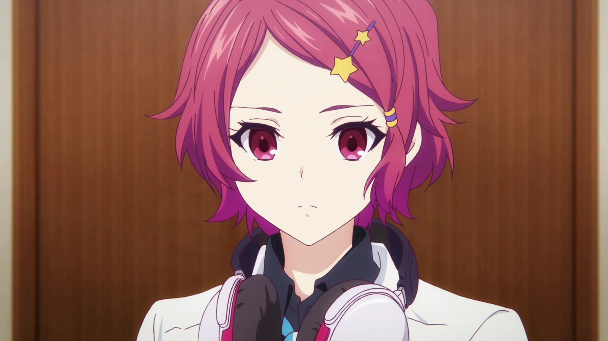
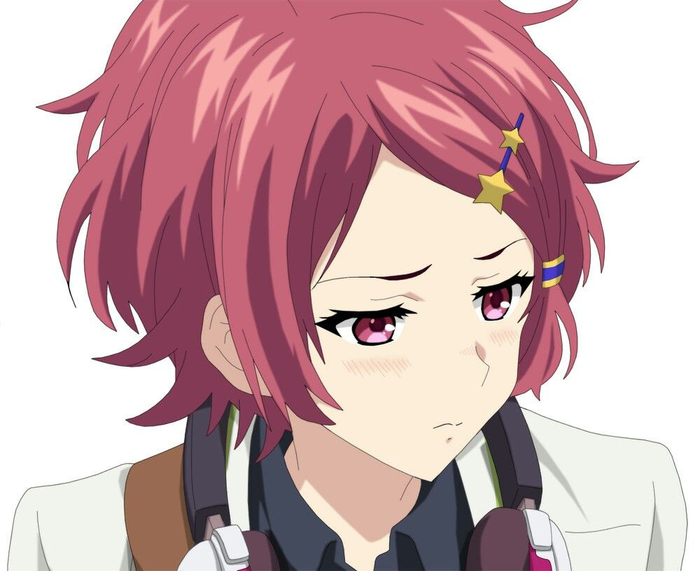
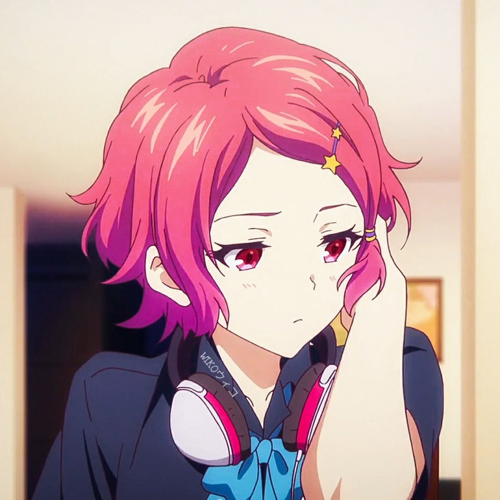

| Minase Koito (水無瀬 小糸) dari Musaigen No Phantom World | |
|---|---|
|
Minase Koito adalah siswa sekolah menengah tahun pertama yang dipindahkan ke Akademi Hosea pada bulan April dan seorang gadis dengan kemampuan khusus dan pemburu hantu , tetapi alih-alih bergabung dengan klub atau melawan hantu bersama orang lain, dia melawan mereka sendirian. Hal ini disebabkan oleh fakta bahwa dia menutup diri dari orang lain karena kejadian yang terjadi di masa kecilnya. |
|
|
Penampilan : Koito adalah seorang gadis remaja dengan perawakan dan tinggi badan rata-rata yang memiliki penampilan cantik yang keren. Rambutnya yang pendek, sepanjang dagu bagian bawah, dan bergelombang memiliki warna magenta-merah muda, yang ia kenakan dengan poni samping yang membingkai wajahnya, dan ia memakai jepit rambut bintang berwarna kuning di sisi kiri rambutnya. Warna matanya cocok dengan warna rambutnya, dan dia juga tidak memiliki highlight putih kedua di matanya tidak seperti karakter lainnya, yang memberikan kesan bahwa dia penyendiri dan pendiam. Dia juga hampir selalu terlihat mengenakan headphone di lehernya. Koito dia biasanya terlihat dengan seragam sekolah Hosea Academy biasa untuk siswa perempuan tahun pertama. |
|
| Pengisi Suara Jepang : Maaya Uchida | |
| Foto | |
|    | |